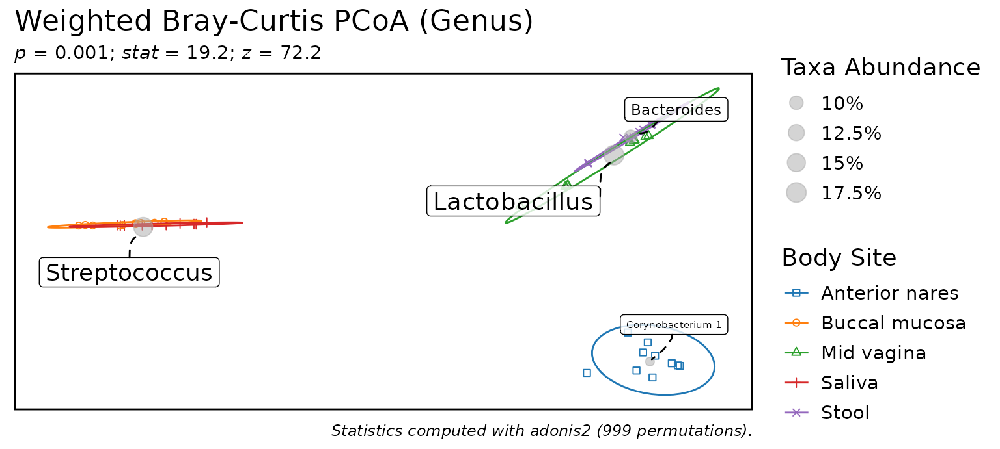

Create
The general purpose as_rbiom() function can convert most
data types into an rbiom
object - see importing for details.
Here we’ll import a dataset from a BIOM file.
library(rbiom)
file <- system.file(package = "rbiom", "extdata", "hmp50.bz2")
biom <- as_rbiom(file)
biom
#>
#> ══ Human Microbiome Project - 50 Sample Demo ═══════════════
#>
#> Oral, nasal, vaginal, and fecal samples from a diverse set
#> of healthy volunteers. Source: Human Microbiome Project
#> (<https://hmpdacc.org>).
#>
#> 50 Samples: HMP01, HMP02, HMP03, ..., and HMP50
#> 490 OTUs: Unc01yki, Unc53100, LtbAci52, ...
#> 7 Ranks: .otu, Kingdom, Phylum, ..., and Genus
#> 5 Fields: .sample, Age, BMI, Body Site, and Sex
#> Tree: <present>
#>
#> ── 182 - 22k reads/sample ──────────────────── 2023-09-22 ──
#> Inspect
The rbiom object has many helpful accessors.
| Accessor | Content |
|---|---|
$counts |
Abundance of each OTU in each sample. |
$metadata |
Sample mappings to metadata (treatment, patient, etc). |
$taxonomy |
OTU mappings to taxonomic ranks (genus, phylum, etc). |
$otus, $n_otus
|
OTU names. |
$samples, $n_samples
|
Sample names. |
$fields, $n_fields
|
Metadata field names. |
$ranks, $n_ranks
|
Taxonomic rank names. |
$tree, $sequences
|
Phylogenetic tree / sequences for the OTUs, or
NULL. |
$id, $comment
|
Arbitrary strings for describing the dataset. |
$depth |
Rarefaction depth, or NULL if unrarefied. |
biom$counts[1:4,1:8] %>% as.matrix()
#> HMP01 HMP02 HMP03 HMP04 HMP05 HMP06 HMP07 HMP08
#> Unc01yki 0 0 0 0 0 0 0 0
#> Unc53100 1083 543 301 223 2672 748 2436 321
#> LtbAci52 0 0 0 0 0 0 0 0
#> CnbTube3 0 0 0 0 0 0 0 0
biom$fields
#> [1] ".sample" "Age" "BMI" "Body Site" "Sex"
# Use pull() to automatically setNames().
pull(biom, 'Age') %>% head()
#> HMP01 HMP02 HMP03 HMP04 HMP05 HMP06
#> 22 24 28 25 27 32pull(), sample_sums(),
taxa_matrix(), taxa_means(),
taxa_sums()
Clone
Rbiom objects are passed by reference. The common
<- assignment operator creates a second reference to the
same object - it does not create a second object. To create a copy of an
rbiom object, use the object’s $clone() method.
a <- as_rbiom(file)
b <- a$clone() # Correct
a$n_samples
#> [1] 50
b$metadata %<>% head()
#> Warning: ℹ Dropping 44 samples from biom object since they are not in the new metadata:
#> "HMP07", "HMP08", "HMP09", "HMP10", "HMP11", "HMP12", "HMP13", "HMP14",
#> "HMP15", "HMP16", "HMP17", "HMP18", "HMP19", "HMP20", "HMP21", "HMP22",
#> "HMP23", "HMP24", …, "HMP49", and "HMP50".
a$n_samples
#> [1] 50
a <- as_rbiom(file)
b <- a # Wrong
a$n_samples
#> [1] 50
b$metadata %<>% head()
#> Warning: ℹ Dropping 44 samples from biom object since they are not in the new metadata:
#> "HMP07", "HMP08", "HMP09", "HMP10", "HMP11", "HMP12", "HMP13", "HMP14",
#> "HMP15", "HMP16", "HMP17", "HMP18", "HMP19", "HMP20", "HMP21", "HMP22",
#> "HMP23", "HMP24", …, "HMP49", and "HMP50".
a$n_samples
#> [1] 6Modify
There are seven components of an rbiom object which you can modify directly. Assigning new values to these components will trigger validation checks and inter-component OTU/sample synchronization. See Working with rbiom Objects for additional details.
| Component | What can be assigned. |
|---|---|
$counts |
matrix of abundances; OTUs (rows) by samples (columns) |
$metadata |
data.frame with '.sample' as the first column |
$taxonomy |
data.frame with '.otu' as the first column |
$tree |
phylo object with the phylogenetic tree for OTUs |
$sequences |
character vector of reference sequences for OTUs |
$id |
string with a title for the dataset |
$comment |
string with additional dataset information |
Rarefy Counts
A common way to normalize microbiome count data is to rarefy it. This process drops samples with too few observations, and randomly removes observations from the remaining samples, so that all samples have the same “rarefaction depth”.
sample_sums(biom) %>% head()
#> HMP01 HMP02 HMP03 HMP04 HMP05 HMP06
#> 1660 1371 1353 1895 3939 4150
biom <- rarefy(biom)
sample_sums(biom) %>% head()
#> HMP01 HMP02 HMP03 HMP04 HMP05 HMP06
#> 1183 1183 1183 1183 1183 1183Add Metadata
Additional sample metadata columns can be added to
biom$metadata (a tibble data.frame). The first column,
'.sample', is used by rbiom to link sample metadata to
samples in the abundance table.
biom$metadata$group <- sample(c('A', 'B'), biom$n_samples, TRUE)
biom %<>% mutate(Obese = BMI >= 30, Sex = NULL)
biom %<>% rename('Years Old' = "Age")
biom$metadata
#> # A tibble: 49 × 6
#> .sample `Years Old` BMI `Body Site` group Obese
#> * <chr> <dbl> <dbl> <fct> <fct> <lgl>
#> 1 HMP01 22 20 Buccal mucosa A FALSE
#> 2 HMP02 24 23 Buccal mucosa A FALSE
#> 3 HMP03 28 26 Saliva B FALSE
#> 4 HMP04 25 23 Saliva A FALSE
#> 5 HMP05 27 24 Buccal mucosa A FALSE
#> # ℹ 44 more rowsSubset Samples
Removing samples from the metadata will remove those samples from the entire rbiom object.
biom %<>% subset(`Body Site` == "Anterior nares")
biom$metadata
#> # A tibble: 10 × 6
#> .sample `Years Old` BMI `Body Site` group Obese
#> * <chr> <dbl> <dbl> <fct> <fct> <lgl>
#> 1 HMP10 22 20 Anterior nares B FALSE
#> 2 HMP15 25 21 Anterior nares A FALSE
#> 3 HMP16 24 19 Anterior nares B FALSE
#> 4 HMP25 33 32 Anterior nares A TRUE
#> 5 HMP31 31 20 Anterior nares A FALSE
#> # ℹ 5 more rows
biom
#>
#> ══ Human Microbiome Project - 50 Sample Demo ═══════════════
#>
#> Oral, nasal, vaginal, and fecal samples from a diverse set
#> of healthy volunteers. Source: Human Microbiome Project
#> (<https://hmpdacc.org>).
#>
#> 10 Samples: HMP10, HMP15, HMP16, ..., and HMP48
#> 135 OTUs: Unc01yki, Unc53100, LtbAci52, ...
#> 7 Ranks: .otu, Kingdom, Phylum, ..., and Genus
#> 6 Fields: .sample, Years Old, BMI, ..., and Obese
#> Tree: <present>
#>
#> ── 1183 reads/sample ───────────────────────── 2023-09-22 ──
#> Compute
Functions that end in _table or _matrix
return calculation results for use outside of rbiom. The
_table suffix indicates the returned object will be a
tibble data.frame with one computed value per row. Alternatively,
_matrix will return a base R matrix.
taxa_table(biom, rank = "Phylum")
#> # A tibble: 60 × 9
#> .rank .sample .taxa .abundance `Years Old` BMI `Body Site` group Obese
#> <fct> <chr> <fct> <dbl> <dbl> <dbl> <fct> <fct> <lgl>
#> 1 Phylum HMP10 Actinobac… 724 22 20 Anterior n… B FALSE
#> 2 Phylum HMP10 Firmicutes 446 22 20 Anterior n… B FALSE
#> 3 Phylum HMP10 Proteobac… 3 22 20 Anterior n… B FALSE
#> 4 Phylum HMP10 Bacteroid… 10 22 20 Anterior n… B FALSE
#> 5 Phylum HMP10 Cyanobact… 0 22 20 Anterior n… B FALSE
#> # ℹ 55 more rows
taxa_matrix(biom, rank = "Phylum")[1:4, 1:8]
#> HMP10 HMP15 HMP16 HMP25 HMP31 HMP32 HMP34 HMP40
#> Actinobacteria 724 847 654 448 668 622 1023 876
#> Bacteroidetes 10 4 0 1 79 12 12 2
#> Cyanobacteria 0 0 3 0 0 25 0 0
#> Deinococcus Thermus 0 0 0 0 0 0 0 3Functions for taxa abundance (like the above
taxa_table()) are prefixed by taxa_.
Similarly, adiv_ is used for alpha diversity and
bdiv_ for beta diversity.
adiv_matrix(), adiv_table(),
bdiv_table(), bdiv_ord_table(),
taxa_table(), taxa_matrix()
Visualize
The plotting functions in rbiom make it easy to produce informative visualizations about alpha diversity, beta diversity, and taxa abundance, and explore associations between those metrics and sample metadata.
See the Plot Types article for an overview of all the different plot options, and Mapping Metadata to Aesthetics for guidance on using colors, shapes, and patterns to represent metadata values.
For example, to display an ordination colored by body site:
bdiv_ord_plot(biom = hmp50, stat.by = "Body Site")
adiv_boxplot(), adiv_corrplot(),
bdiv_boxplot(), bdiv_corrplot(),
bdiv_heatmap(), bdiv_ord_plot(),
rare_stacked(), rare_corrplot(),
rare_multiplot(), taxa_stacked(),
taxa_boxplot(), taxa_corrplot(),
taxa_heatmap()
Analyze
Visualizations are an excellent way to observe differences between
sample groups. When stat.by is set, boxplots, corrplots,
and ord_plots will include the following:
- p-values and brief methodology on the plot itself.
-
$statsattribute with a detailed statistics table. -
$stats$codeattribute with the R code used to generate the table.
The rbiom statistics article reviews this topic in greater detail.
p <- adiv_boxplot(hmp50, stat.by = "Body Site", facet.by = "Sex")
p
p$stats
#> # Model: kruskal.test(.diversity ~ `Body Site`)
#> # A tibble: 2 × 7
#> Sex .stat .h1 .p.val .adj.p .n .df
#> <fct> <dbl> <fct> <dbl> <dbl> <int> <int>
#> 1 Female 24.1 > 0 0.0000761 0.000152 30 4
#> 2 Male 13.9 > 0 0.00302 0.00302 20 3
p$stats$code
#> data <- adiv_table(biom, "Shannon", c("Body Site", "Sex"))
#>
#> data %<>% dplyr::rename(
#> .resp = ".diversity",
#> .stat.by = "Body Site" )
#>
#> stats <- plyr::ddply(data, .(Sex), function (data) {
#> tryCatch(error = function (e) data.frame()[1,], suppressWarnings({
#>
#> data %>%
#> stats::kruskal.test(.resp ~ .stat.by, .) %>%
#> with(tibble(
#> .stat = statistic,
#> .h1 = factor('> 0'),
#> .p.val = p.value,
#> .n = nrow(data),
#> .df = parameter ))
#>
#> }))
#> }) %>%
#> tibble::as_tibble() %>%
#> dplyr::mutate(.adj.p = p.adjust(.p.val, 'fdr'), .after = .p.val) %>%
#> dplyr::arrange(.p.val)Share
Plots are essentially ggplot objects, and
ggplot2::ggsave() can save them as PNG, PDF, SVG, and many
other image file types.
To save your rbiom object to a BIOM file, use
write_biom(). When sharing a dataset with someone who is
unfamiliar with accessing BIOM files, write_xlsx() is also
an option.
A few additional resources to know about:
- R Markdown - reproducible analyses/reports.
- flexdashboard - interactive dashboards.
- atima - rbiom in website form.
ggplot2::ggsave(), patchwork::wrap_plots(),
write_biom(), write_xlsx()